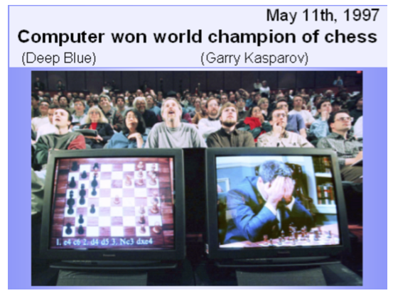

Bayes AI
Unit 1: Introduction: AI Today and in the Past. Probability and Bayes Rule
Vadim Sokolov
George Mason University
Spring 2025
Random facts
On this Day (January 27):
- 1888: The National Geographic Society is founded in Washington, D.C.
- 1945: The Red Army liberates the Auschwitz-Birkenau concentration
- 1967: The United States, United Kingdom, and Soviet Union sign the Outer Space Treaty in Washington, D.C.
- 1973: The Paris Peace Accords officially end the Vietnam War.
- 2010: Apple Inc. unveils the iPad.
Brief History of AI
The first thoughts about artificial intelligence
- Hephaestus created for himself Android robots, such as a giant human-like robot of Talos.
- Pygmalion revived Galatea.
- Jehovah and Allah - pieces of clay.1
- Particularly wise rabbis could create golems.
- Albert the Great made an artificial speaking head (which very upset Thomas Aquinas).
Mechanical machines
Robots and Automatic Machines Were Generally Very Inventive: Al-Jazari (XII Century)
Hesdin Castle (Robert II of Artois), Leonardo’s robot…
Mechanical machines
Jaquet-Droz automata (XVIII century):
Mechanical machines
- But this is in mechanics, in mathematics/logic AI it was quite rudimentary for a long time
Logic machine of Ramon Llull (XIII-XIV centuries)
- Starting with Dr. Frankenstein, further AI in the literature appears constantly …
Turing Test
- AI as a science begins with a Turing test (1950).
- The ides of the Turing test is to check if a machine can imitate a human in a conversation.
- The original formulaiton was more nuancesd.
Shennon’s Theseus
- YouTube Video
- Early 1950s, Claude Shannon (The father of Information Theory) demonstrates Theseus
- A life-sized magnetic mouse controlled by relay circuits, learns its way around a maze.
Stanford Cart
- YouTube Video
- Takes 2.6-second for signal to travel from earth to the moon
- Latest iterations is automated with 3D vision capabilities
- Pause after each meter of movement and take 10-15 minutes to reassess its surroundings and reevaluate its decided path.
- In 1979, this cautious version of the cart successfully made its way 20 meters through a chair-strewn room in five hours without human intervention.
Turing Test
It takes a lot to create an AI system:
- Processing of a natural language
- Sensors and actuators
- Representation of knowledge
- Inference from the existing knowledge
- Training on experience (Machine Learning).
Dartmouth workshop
- AI as a science appeared in 1956 at the Dartmouth workshop.
- It was organized by John McCarthy, Marvin Minsky, Claude Shennon and Nathaniel Rochester.
- It was probably the most ambitious grant proposal in the history of computer science.
Dartmouth workshop
We propose that a 2-month, 10-man study of artificial intelligence be carried out during the summer of 1956 at Dartmouth College in Hanover, New Hampshire. The study is to proceed on the basis of the conjecture that every aspect of learning or any other feature of intelligence can in principle be so precisely described that a machine can be made to simulate it. An attempt will be made to find how to make machines use language, form abstractions and concepts, solve kinds of problems now reserved for humans, and improve themselves. We think that a significant advance can be made in one or more of these problems if a carefully selected group of scientists work on it together for a summer.
1956-1960: Great hopes
- Optimistic time. It seemed a that we were almost there…
- Allen Newell, Herbert A. Simon, and Cliff Shaw: Logic Theorist.
- Automated reasoning.
- It was able to prof most of the Principia Mathematica, in some places even more elegant than Russell and Whitehead.
1956-1960: Big Hopes
- General Problem Solver - a program that tried to think as a person
- A lot of programs that have been able to do some limited things (MicroWorlds):
- Analogy (IQ tests with multiple choice questions)
- Student (algebraic verbal tasks)
- Blocks World (rearranged 3D blocks).
1970s:Knowledge Based Systems
- The bottom line: to accumulate a fairly large set of rules and knowledge about the subject area, then draw conclusions.
- First success: MYCIN - Diagnosis of blood infections:
- about 450 rules
- The results are like an experienced doctor and significantly better than beginner doctors.
1980-2010: Commercial applications Industry AI
- The first AI department was at Dec (Digital Equipment Corporation)It is argued that by 1986 he saved the Dec about $ 10 million per year.
- The boom ended by the end of the 80s, when many companies could not live up to high expectations.
1990-2010: DATA MINING, MACHINE LEARNING
- In recent decades, the main emphasis has shifted to machine training and search for patterns in the data.
- Especially - with the development of the Internet.
- Not too many people remember the original AI ideas, but Machine Learning is now everywhere.
- But Robotics flourishes and uses Machine Learning at every step.
Rule-Based System vs Bayes
- Since 1956, the field of artificial intelligence (AI) has undergone significant transformations
- traditional AI was mostly focused on rule-based systems and boolean logic programming, with limited learning capabilities. - It lead to them being brittle in changing environments.
- On the other hand, emerging AI is focused on modeling uncertainties, pattern matching, and deep learning.
- All of those are data-driven approaches.
- These approaches are more adaptable and can handle complex and unstructured data. They are also more data-dependent and lack interpretability.
Rule-Based System vs Bayes
Old AI
If rain outside, then take umbrella
This rule cannot be learned from data. It does not allow inference. Cannot say anything about rain outside if I see an umbrella.
New AI
Probability of taking umbrella, given there is rain
Conditional probability rule can be learned from data. Allows for inference. We can calculate the probability of rain outside if we see an umbrella.
- Bayesian approach is a powerful statistical framework based on the work of Thomas Bayes and later Laplace.
- It provides a probabilistic approach to reasoning and learning
- Allowing us to update our beliefs about the world as we gather new data.
- This makes it a natural fit for artificial intelligence, where we often need to deal with uncertainty and incomplete information.
DEFINITION
- How to determine “learning”?
Definition:
The computer program learns as the data is accumulating relative to a certain problem class \(T\) and the target function of \(P\) if the quality of solving these problems (relative to \(P\)) improves with gaining new experience.
- The definition is very (too?) General.
- What specific examples can be given?
Tasks and concepts of ML

Tasks and concepts of ML: Supervised Learning
- training sample – a set of examples, each of which consists of input features (attributes) and the correct “answers” - the response variable
- Learn a rule that maps input features to the response variable
- Then this rule is applied to new examples (deployment)
- The main thing is to train a model that explains not only examples from the training set, but also new examples (generalizes)
- Otherwise - overfitting
Tasks and concepts of ML: unsupervised learning
There are no correct answers, only data, e.g. clustering:
- We need to divide the data into pre -unknown classes to some extent similar:
- highlight the family of genes from the sequences of nucleotides
- cluster users and personalize the application for them
- cluster the mass spectrometric image to parts with different composition
Tasks and concepts of ML: unsupervised learning
- Dimensionality reduction: data have a high dimension, it is necessary to reduce it, select the most informative features so that all of the above algorithms can work
- Matrix Compition: There is a sparse matrix, we must predict what is in the missing positions.
- Anomaly detection: find anomalies in the data, e.g. fraud detection. -Often the outputs answers are given for a small part of the data, then we call it semi -supervised Learning.
Tasks and concepts of ML: reinforcement learning
- Multi-armed bandits: there is a certain set of actions, each of which leads to random results, you need to get as much rewardas possible
- Exploration vs.Exploitation: how and when to proceed from the study of the new to use what has already studied
- Credit Assignment: You get rewarded at the very end (won the game), and we must somehow distribute this reward on all the moves that led to victory.
Tasks and concepts of ML: active learning
- Active Learning - how to choose the following (relatively expensive) test
- Boosting - how to combine several weak classifiers so that it turns out good
- Model Selection - where to draw a line between models with many parameters and with a few.
- Ranking: response list is ordered (internet search)
Tasks and concepts of AI

Tasks and concepts of AI: Reasoning
- Bayesian networks: given conditional probabilities, calculate the probability of the event
- o1 by OpenAI: a family of AI models that are designed to perform complex reasoning tasks, such as math, coding, and science. o1 models placed among the top 500 students in the US in a qualifier for the USA Math Olympiad (AIME)
- Gemini 2.0: model for the agentic era
Tasks and concepts of AI: Representation
- Knowledge Graphs: a graph database that uses semantic relationships to represent knowledge
- Embeddings: a way to represent data in a lower-dimensional space
- Transformers: a deep learning model that uses self-attention to process sequential data
Tasks and concepts of AI: Generation
In shadows of data, uncertainty reigns,
Bayesian whispers, where knowledge remains.
With prior beliefs, we start our quest,
Updating with evidence, we strive for the best.
A dance of the models, predictions unfold,
Inferences drawn, from the new and the old.
Through probabilities, we find our way,
In the world of AI, it’s the Bayesian sway.
So gather your data, let prior thoughts flow,
In the realm of the unknown, let your insights grow.
For in this approach, with each little clue,
We weave understanding, both rich and true.
Tasks and concepts of AI: Generation
Tasks and concepts of AI: Generation
A humorous and illustrative scene of a hockey player sitting on a bench in full gear, holding a hockey stick in one hand and a whiteboard marker in th

Chess and AI
Old AI: Deep Blue (1997) vs. Garry Kasparov
Kasparov vs IBM’s DeepBlue in 1997
AlphaGo Zero
- Remove all human knowledge from training process - only uses self play,
- Takes raw board as input and neural network predicts the next move.
- Uses Monte Carlo tree search to evaluate the position.
- The algorithm was able to beat AlphaGo 100-0. The algorithm was then used to play chess and shogi and was able to beat the best human players in those games as well.
Alpha GO vs Lee Sedol: Move 37 by AlphaGo in Game Two
Probability in machine learning
- In all methods and approaches, it is useful not only generate an answer, but also evaluate how confident in this answer, how well the model describes the data, how these values will change in further experiments, etc.
- Therefore, the central role in machine learning is played by the theory of probability - and we will also actively use it.
References
- Christopher M. Bishop, Pattern Recognition and Machine Learning, Springer, 2007.
- Kevin Murphy, Machine Learning: A Probabilistic Perspective, MIT Press, 2013.
- Trevor Hastie, Robert Tibshirani, and Jerome Friedman, The Elements of Statistical Learning: Data Mining, Inference, and Prediction, 2nd ed., Springer, 2009.
Bayes Approach
Probability
Subjective Probability (de Finetti, Ramsey, Savage, von Neumann, ... )
Principle of Coherence:
A set of subjective probability beliefs must avoid sure loss
- If an event \(A\) is certain to occur, it has probability 1
- Either an event \(A\) occurs or it does not. \[ P(A) = 1 - P(\mbox{not }A) \]
- If two events are mutually exclusive (both cannot occur simultaneously) then \[ P(A \mbox{ or } B) = P(A) + P(B) \]
- Joint probability, when events are independent \[ P(A \mbox{ and } B) = P( A) P(B) \]
Conditional, Joint and Marginal Distributions
Use probability to describe outcomes involving more than one variable at a time. Need to be able to measure what we think will happen to one variable relative to another
In general the notation is ...
- \(P(X=x, Y=y )\) is the joint probability that \(X =x\) and \(Y=y\)
- \(P(X=x \mid Y=y )\) is the conditional probability that \(X\) equals \(x\) given \(Y=y\)
- \(P(X=x)\) is the marginal probability of \(X=x\)
Conditional, Joint and Marginal Distributions
Relationship between the joint and conditional ... \[ \begin{aligned} P(x,y) & = P(x) P(y \mid x) \\ & = P(y) P(x \mid y) \end{aligned} \]
Relationship between the joint and marginal ... \[ \begin{aligned} P(x) & = \sum_y P(x,y) \\ P(y) & = \sum_x P(x,y) \end{aligned} \]
Bayes Rule
The computation of \(P(x \mid y)\) from \(P(x)\) and \(P(y \mid x)\) is called Bayes theorem ... \[ P(x \mid y) = \frac{P(y,x)}{P(y)} = \frac{P(y,x)}{\sum_x P(y,x)} = \frac{P(y \mid x)P(x)}{\sum_x P(y \mid x)P(x)} \]
This shows now the conditional distribution is related to the joint and marginal distributions.
You’ll be given all the quantities on the r.h.s.
Bayes Rule
Key fact: \(P(x \mid y)\) is generally different from \(P(y \mid x)\)!
Example: Most people would agree \[ \begin{aligned} Pr & \left ( Practice \; hard \mid Play \; in \; NBA \right ) \approx 1\\ Pr & \left ( Play \; in \; NBA \mid Practice \; hard \right ) \approx 0 \end{aligned} \]
The main reason for the difference is that \(P( Play \; in \; NBA ) \approx 0\).
Independence
Two random variable \(X\) and \(Y\) are independent if \[ P(Y = y \mid X = x) = P (Y = y) \] for all possible \(x\) and \(y\) values. Knowing \(X=x\) tells you nothing about \(Y\)!
Example: Tossing a coin twice. What’s the probability of getting \(H\) in the second toss given we saw a \(T\) in the first one?
Bookies vs Betters: The Battle of Probabilistic Models
image
Source: The Secret Betting Strategy That Beats Online Bookmakers
Bookies vs Betters: The Battle of Probabilistic Models
- Bookies set odds that reflect their best guess on probabilities of a win, draw, or loss. Plus their own margin
- Bookies have risk aversion bias. When many people bet for an underdog (more popular team)
- Bookies hedge their bets by offering more favorable odds to the opposed team
- Simple algorithm: calculate average odds across many bookies and find outliers with large deviation from the mean
Odds: Oddschecker
We can express probabilities in terms of Odds via \[ O(A) = \frac{ 1- P(A) }{ P(A) } \; \; {\rm or} \; \; P(A) = \frac{ 1 }{ 1 + O(A) } \]
- For example if \(O(A) = 1\) then for ever $1 bet you will payout $1. An event with probability \(\frac{1}{2}\).
- If \(O(A) = 2\) or \(2:1\), then for a $1 bet you’ll payback $3.
In terms of probability \(P = \frac{1}{3}\).
Envelope Paradox
The following problem is known as the “exchange paradox”.
- A swami puts \(m\) dollars in one envelope and \(2 m\) in another. He hands on envelope to you and one to your opponent.
- The amounts are placed randomly and so there is a probability of \(\frac{1}{2}\) that you get either envelope.
- You open your envelope and find \(x\) dollars. Let \(y\) be the amount in your opponent’s envelope.
Envelope Paradox
You know that \(y = \frac{1}{2} x\) or \(y = 2 x\). You are thinking about whether you should switch your opened envelope for the unopened envelope of your friend. It is tempting to do an expected value calculation as follows \[ E( y) = \frac{1}{2} \cdot \frac{1}{2} x + \frac{1}{2} \cdot 2 x = \frac{5}{4} x > x \] Therefore, it looks as if you should switch no matter what value of \(x\) you see. A consequence of this, following the logic of backwards induction, that even if you didn’t open your envelope that you would want to switch!
Bayes Rule
Where’s the flaw in this argument? Use Bayes rule to update the probabilities of which envelope your opponent has! Assume \(p(m)\) of dollars to be placed in the envelope by the swami.
Such an assumption then allows us to calculate an odds ratio \[ \frac{ p \left ( y = \frac{1}{2} x | x \right ) }{ p \left ( y = 2 x | x \right ) } \] concerning the likelihood of which envelope your opponent has.
Then, the expected value is given by
\[ E(y) = p \left ( y = \frac{1}{2} x \; \vert \; x \right ) \cdot \frac{1}{2} x + p \left ( y = 2 x | x \right ) \cdot 2 x \] and the condition \(E( y) > x\) becomes a decision rule.
Prisoner’s Dilemma
Three prisoners \(A , B , C\).
Each believe are equally likely to be set free.
Prisoner \(A\) goes to the warden \(W\) and asks if s/he is getting axed.
The Warden can’t tell \(A\) anything about him.
He provides the new information: \(WB\) = “\(B\) is to be executed”
Prisoner’s Dilemma
Uniform Prior Probabilities: \[ \begin{array}{c|ccc} Prior & A & B & C \\\hline P ( {\rm Pardon} ) & 0.33 & 0.33 & 0.33 \end{array} \]
Posterior: Compute \(P ( A | WB )\)?
What happens if \(C\) overhears the conversation?
Compute \(P ( C | WB )\)?
Game Show Problem
Named after the host of the long-running TV show, Let’s make a Deal.
- A contestant is given the choice of 3 doors.
There is a prize (a car, say) behind one of the doors and something worthless behind the other two doors: two goats.
- The optimal strategy is counter-intuitive
Puzzle
The game is as follows:
You pick a door.
Monty then opens one of the other two doors, revealing a goat.
You have the choice of switching doors.
Is it advantageous to switch?
Assume you pick door \(A\) at random. Then \(P(A) = ( 1 /3 )\).
You need to figure out \(P( A | MB )\) after Monte reveals \(B\) is a goat.
Bayesian Updating
Bayes Rule
In its simplest form.
- Two events \(A\) and \(B\). Bayes rule \[ P ( A | B ) = \frac{P ( A \cap B )}{ P ( B )} = \frac{P ( B | A ) P ( A )}{ P ( B )} \]
- Law of Total Probability \[ P ( B ) = P ( B | A ) P ( A ) + P ( B | \bar{A} ) P ( \bar{A} ) \] Hence we can calculate the denominator of Bayes rule.
Bayes Theroem
Many problems in decision making can be solved using Bayes rule.
- AI: Rule-based decision making.
- It’s counterintuitive! But gives the “right” answer.
Bayes Rule: \[ \mbox{P}(A|B) = \frac{\mbox{P}(A \cap B)}{\mbox{P}(B)} = \frac{ \mbox{P}(B|A) \mbox{P}(A)}{ \mbox{P}(B)} \] Law of Total Probability: \[ \mbox{P}(B) = \mbox{P}(B|A) \mbox{P}(A ) + \mbox{P}(B| \bar{A} ) \mbox{P}(\bar{A} ) \]
Apple Watch
The Apple Watch Series 4 can perform a single-lead ECG and detect atrial fibrillation. The software can correctly identify 98% of cases of atrial fibrillation (true positives) and 99% of cases of non-atrial fibrillation (true negatives).
However, what is the probability of a person having atrial fibrillation when atrial fibrillation is identified by the Apple Watch Series 4?
Bayes’ Theorem: \[ P(A|B)=\frac{P(B|A)P(A)}{P(B)} \]
Apple Watch
| Predicted | atrial fibrillation | no atrial fibrillation |
|---|---|---|
| atrial fibrillation | 1960 | 980 |
| no atrial fibrillation | 40 | 97020 |
\[ 0.6667 = \frac{0.98\cdot 0.02}{ 0.0294} \]
The conditional probability of having atrial fibrillation when the Apple Watch Series 4 detects atrial fibrillation is about 67%.
Abraham Wald
How Abraham Wald improved aircraft survivability. Raw Reports from the Field
| Type of damage suffered | Returned (316 total) | Shot down (60 total) |
|---|---|---|
| Engine | 29 | ? |
| Cockpit | 36 | ? |
| Fuselage | 105 | ? |
| None | 146 | 0 |
This fact would allow Wald to estimate: \[ P(\text{damage on fuselage} \mid \text{returns safely}) = 105/316 \approx 32\% \] You need the inverse probability : \[ P(\text{returns safely} \mid \text{damage on fuselage}) \] Completely different!
Abraham Wald
Imputation: fill-in missing data.
| Type of damage suffered | Returned (316 total) | Shot down (60 total) |
|---|---|---|
| Engine | 29 | 31 |
| Cockpit | 36 | 21 |
| Fuselage | 105 | 8 |
| None | 146 | 0 |
Then Wald got: \[ \begin{aligned} P(\text{returns safely} \mid \text{damage on fuselage}) & =\frac{105}{105+8}\approx 93\%\\ P(\text{returns safely} \mid \text{damage on engine}) & =\frac{29}{29+31}\approx 48\% \end{aligned} \]
“Personalization" \(=\)”Conditional Probability"
- Conditional probability is how AI systems express judgments in a way that reflects their partial knowledge.
- Personalization runs on conditional probabilities, all of which must be estimated from massive data sets in which you are the conditioning event.
Many Business Applications!! Suggestions vs Search….
Probability as Evidence
evidence: known facts about criminal (e.g. blood type, DNA, ...)
suspect: matches a trait with evidence at scene of crime
Let \(G\) denote the event that the suspect is the criminal.
Bayes computes the conditional probability of guilt
\[ P ( G | {\rm evidence} ) \] Evidence \(E\): suspect and criminal possess a common trait
Probability as Evidence
Bayes Theorem yields \[ P ( G | {\rm evidence} ) = \frac{ P ( {\rm evidence} | G ) P ( G ) }{ P ( {\rm evidence} )} \]
In terms of relative odds \[ \frac{ P ( I | {\rm evidence} ) }{ P ( G | {\rm evidence} ) } = \frac{ P ( {\rm evidence} | I ) }{ P ( {\rm evidence} | G ) } \frac{ P ( I ) }{ P ( G ) } \]
Bayes Factors
There are two terms:
- Prior Odds of Guilt \(O ( G ) = P ( I ) / P ( G )\) ?
How many people on the island?
Sensitivity “what if” analysis?
- The Bayes factor \[ \frac{ P ( {\rm evidence} | I ) }{ P ( {\rm evidence} | G ) } \] is common to all observers and updates everyone’s initials odds
Prosecutor’s Fallacy
The most common fallacy is confusing \[ P ( {\rm evidence} | G ) \; \; {\rm with} \; \; P ( G | {\rm evidence} ) \]
Bayes rule yields \[ P ( G | {\rm evidence} ) = \frac{ P ( {\rm evidence} | G ) p( G )}{ P ( {\rm evidence} )} \] Your assessment of \(P( G )\) will matter.
Island Problem
Suppose there’s a criminal on a island of \(N+1\) people.
- Let \(I\) denote innocence and \(G\) guilt.
- Evidence \(E\): the suspect matches a trait with the criminal.
- The probabilities are \[ p(E|I)=p\;\;\mathrm{and}\;\;p(E|G)=1 \]
Bayes factor
Bayes factors are likelihood ratios
The Bayes factor is given by \[ \frac{p(E|I)}{p(E|G)}=p \]
If we start with a uniform prior distribution we have
\[ p(I)=\frac{1}{N+1}\;\;\mathrm{and}\;\;odds(I)=N \]
- Priors will matter!
Island Problem
Posterior Probability related to Odds \[ p(I|y)=\frac {1}{1+odds(I|y)}% \]
- Prosecutors’ fallacy
The posterior probability \(p(I|y)\neq p(y|I)=p\).
- Suppose that \(N=10^{3}\) and \(p=10^{-3}\). Then
\[ p( I|y) = \frac{1}{1 + 10^3 \cdot 10^{-3}} = \frac{1}{2} \]
The odds on innocence are \(odds(I|y)=1\).
There’s a \(50/50\) chance that the criminal has been found.
Sally Clark Case: Independence or Bayes?
Sally Clark was accused and convicted of killing her two children
They could have both died of SIDS.
The chance of a family which are non-smokers and over 25 having a SIDS death is around 1 in \(8,500\).
The chance of a family which has already had a SIDS death having a second is around 1 in 100.
The chance of a mother killing her two children is around 1 in \(1,000,000\).
Bayes or Independence
Under Bayes \[ \begin{aligned} P \left( \mathrm{both} \; \; \mathrm{SIDS} \right) & = P \left( \mathrm{first} \; \mathrm{SIDS} \right) P \left( \mathrm{Second} \; \; \mathrm{SIDS} | \mathrm{first} \; \mathrm{SIDS} \right) \\ & = \frac{1}{8500} \cdot \frac{1}{100} = \frac{1}{850,000} \end{aligned} \] The \(\frac{1}{100}\) comes from taking into account genetics.
Independence, as the court did, gets you
\[ P \left( \mathrm{both} \; \; \mathrm{SIDS} \right) = (1/8500) (1/8500) = (1/73,000,000) \]
- By Bayes rule
\[ \frac{p(I|E)}{p(G|E)} = \frac{P( E \cap I)}{P( E \cap G)} \] \(P( E \cap I) = P(E|I )P(I)\) needs discussion of \(p(I)\).
Comparison
- Hence putting these two together gives the odds of guilt as
\[ \frac{p(I|E)}{p(G|E)} = \frac{1/850,000}{1/1,000,000} = 1.15 \] In terms of posterior probabilities
\[ p( G|E) = \frac{1}{1 + O(G|E)} = 0.465 \]
- If you use independence
\[ \frac{p(I|E)}{p(G|E)} = \frac{1}{73} \; {\rm and} \; p( G|E) \approx 0.99 \] The suspect looks guilty.
OJ Simpson
The O.J. Simpson trial was possibly the trail of the century
The murder of his wife Nicole Brown Simpson, and a friend, Ron Goldman, in June 1994 and the trial dominated the TV networks
DNA evidence and probability: \(p( E| G)\)
Bayes Theorem: \(p( G | E )\)
Prosecutor’s Fallacy: \(p( G|E ) \neq p(E|G)\)
Odds ratio with gives \[ \frac{ p( I|E) }{ p ( G | E ) } = \frac{ p( E|I )}{ p( E|G) } \frac{ p(I) }{p(G ) } \] Prior odds conditioned on background information.
OJ Simpson: Bayes Theorem
Suppose that you are a juror in a murder case of a husband who is accused of killing his wife.
The husband is known is have battered her in the past.
Consider the three events:
\(G\) “husband murders wife in a given year”
\(M\) “wife is murdered in a given year”
\(B\) “husband is known to batter his wife”
OJ Simpson: Bayes Theorem
- Only \(1/10\)th of one percent of husbands who batter their wife actually murder them.
Conditional on eventually murdering their wife, there a one in ten chance it happens in a given year.
In 1994, 5000 women were murdered, 1500 by their husband
Given a population of 100 million women at the time \[ p( M | I ) = \frac{ 3500 }{ 10^8 } \approx \frac{1}{30,000} . \] We’ll also need \(p( M | I , B ) = p( M | I )\)
OJ Simpson: Prosecutor’s Fallacy
- Let \(G =\) Guilt and \(E=\) Evidence
- Prosecutor’s Fallacy: \(P(G|E) \neq P(E|G)\).
- DNA evidience gives \(P( E | I )\) – the \(p\)-value.
What’s the “match probability” for a rare event?
Bayes theorem in Odds \[ \frac{p(G|M,B)}{p(I|M,B)} = \frac{p(M|G,B)}{p(M|I,B)} \frac{p(G|B)}{p(I|B)} \]
OJ Simpson: Bayes Theorem
By assumption,
- \(p(M|G,B)=1\)
- \(p(M|I,B)= \frac{1}{30,000}\)
- \(p( G|B) = \frac{1}{1000}\) and so
\[ \frac{p(G|B)}{p(I|B)} = \frac{1}{999} \]
Therefore, \[ \frac{p(G|M,B)}{p(I|M,B)} \approx 30 \; {\rm and} \; p(G|M,B) = \frac{30}{31} \approx 97\% \] More than a 50/50 chance that your spouse murdered you!
Fallacy \(p ( G | B ) \neq p( G | B , M )\)
The defense stated to the press: in any given year
“Fewer than 1 in 2000 of batterers go on to murder their wives”.
Now estimate \(p( M | \bar{G} , B ) = p( M| \bar{G} ) = \frac{1}{20,000}\).
The Bayes factor is then
\[ \frac{ p( G | M , B ) }{ p( \bar{G} | M , B ) } = \frac{ 1/999 }{1 /20,000} = 20 \] which implies posterior probabilities
\[ p( \bar{G} | M , B ) = \frac{1}{1+20} \; {\rm and} \; p( G | M , B ) = \frac{20}{21} \] Hence its over 95% chance that O.J. is guilty based on this information!
Defense intended this information to exonerate O.J.
Base Rate Fallacies
“Witness” 80 % certain saw a “checker” \(C\) taxi in the accident.
What’s your \(P ( C | E )\) ?
Need \(P ( C )\). Say \(P( C ) = 0.2\) and \(P( E | C) = 0.8\).
Then your posterior is
\[ P ( C | E ) = \frac{0.8 \cdot 0.2}{ 0.8 \cdot 0.2 + 0.2 \cdot 0.8 } = 0.5 \]
Therefore \(O ( C ) = 1\) a 50/50 bet.
Updating Fallacies
Most people don’t update quickly enough in light of new data
Wards Edwards 1960s
When you have a small sample size, Bayes rule still updates probabilities
Two players: either 70 % A or 30 % A
Observe \(A\) beats \(B\) 3 times out of 4.
What’s \(P ( A = 70 \% \; {\rm player} )\) ?